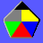
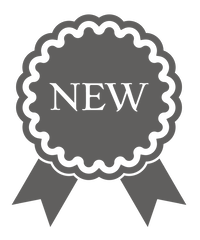
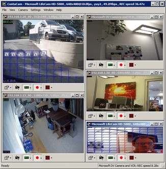
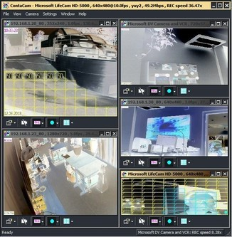
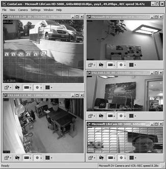

💗 Arduino
Remember
-
W5200 and W5500 based devices support up to 8 concurrent
connections, while W5100 and boards with ≤ 2KB RAM are
limited to 4. If that limit is reached, some images
do not load, and a connection refused error can be observed in your
browser's developer console under the network tab.
-
The SD library can only handle short 8.3 names with no spaces.
An animated gif

A transparent png

Jpeg pictures



A text document
Lorem